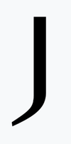

"Failures are finger posts on the road to achievement."
Scroll to explore
0
Startups Documented
$0B
Combined Funding Lost
0
Founder Lessons Shared
0
Industries Covered
Featured Failures
The Biggest Collapses
WeWork
Community-adjusted EBITDA couldn't pay the rent.
$47 Billion Lost·Unsustainable Business Model
Toys R Us
Loaded with debt, outrun by Amazon, forgotten by kids.
$5 Billion+ Lost·Private Equity Debt Load
Quibi
$1.75B to discover nobody wanted 10-minute shows on their phone.
$1.75 Billion Lost·Wrong Product-Market Fit
Theranos
Fake it till you make it, until you go to prison.
$900 Million Lost·Medical Fraud

Jawbone
Pioneered wearables, perfected lawsuits, out-executed by Apple.
$900 Million Lost·Hardware Failure & Competition
Zenefits
Grew 10x per year until compliance destroyed it.
$584 Million Lost·Compliance & Culture Failure
MoviePass
We lose money on every ticket, but we'll make it up in volume.
$400 Million Lost·Fundamentally Flawed Unit Economics
What is StartupGrave?
We Document the Failures Everyone Ignores
The startup world is obsessed with success stories — unicorns, IPOs, billion-dollar exits. But 90%
of startups fail, and almost nobody talks about what actually went wrong.
StartupGrave is the world's most comprehensive library of startup post-mortems. We document real companies
that raised real money, built real teams — and then fell. Not to mock them, but to learn from
them.
Every collapse is a masterclass in what not to do. Our mission is to make those lessons accessible,
searchable, and actionable for the next generation of founders — before they repeat the same costly
mistakes.
Anonymous & Safe to Submit
Founders submit their stories fully anonymously. No judgment, no naming and
shaming — just raw, honest accounts of what went wrong and why.
Searchable by Industry & Cause
Filter by category, root cause, funding raised, or year closed. Find patterns
across industries and spot warning signs before they hit your company.
Real Lessons, Not Platitudes
Every entry includes a "What I'd Do Differently" section — specific, actionable
insights from people who lived through the failure and came out the other side wiser.
How It Works
Built for Founders, by Founders
01
Submit a Post-Mortem
Founders, ex-employees, or investors submit failure accounts. Submissions are
reviewed for factual accuracy and published with the submitter's chosen level of anonymity.
02
We Verify & Structure
Our editorial team cross-references public records, press coverage, and investor
statements to build a structured, unbiased account of each collapse.
03
The Community Learns
Published post-mortems become searchable resources. Founders access real-world
lessons, business schools use our library for case studies, and the ecosystem gets smarter.
Our Mission
"The only real mistake is the one from which we learn nothing."
— Henry Ford
StartupGrave exists because the startup ecosystem needs an honest mirror. Every founder
who reads a post-mortem before raising their first round is a founder better equipped to survive. We are
building the most complete, candid, and compassionate failure library ever assembled — because the world needs
more companies to succeed, and that starts with understanding why others didn't.
Browse by Industry
Find Failures In Your Space
SaaS / Software
38
Health Tech
24
Entertainment
19
Retail / E-Commerce
31
Hardware
17
FinTech
22
Transport / Mobility
15
Real Estate / Proptech
11
Ready to Contribute?
Share Your Failure Story
If you've built and lost, your experience is more valuable than any success story. Help
future founders avoid the pitfalls you faced.
The Archive
THE GRAVEYARD
Showing 18 entries
FAIL
Est. 2024 · Open Archive
ABOUT STARTUP GRAVE
"The graveyard of ambition is also the library of wisdom. Every failure contains a lesson
no business school will teach you."
Our Mission
WHY WE DOCUMENT FAILURE
Every year, thousands of startups raise hundreds of millions of dollars, hire brilliant people, and
pursue audacious visions — and then quietly disappear. Their stories are told in press releases and
post-mortems that vanish into the internet, leaving the next generation of founders to repeat the same
fatal mistakes.
StartupGrave exists to change that. We believe that failure is the most undervalued
asset in the startup ecosystem. The lessons embedded in each collapse — the governance failures, the unit
economics blindspots, the timing miscalculations — are worth more than any MBA curriculum.
We are not here to mock the fallen. We are here to honour them with the only tribute that matters:
making sure their mistakes are never repeated.
Radical Transparency
We publish what really happened — not the sanitised version. Real mistakes, real
consequences, real lessons.
Anonymity First
Founders, employees and investors can submit stories completely anonymously. No
names, no blame — just truth.
Open to All
This archive belongs to the founder community. Free to read, free to contribute,
forever.
The Scale of Failure
The Graveyard in Numbers
0
Companies Documented
and counting
$0B
Combined Capital Lost
investor & founder capital
0
Lessons Extracted
from every postmortem
0
Industries Covered
from SaaS to hardware
The Process
How We Work
01
Submit a Story
Founders, employees, and investors submit failure stories through our
anonymous intake form. No attribution required — only honesty.
02
Research & Verify
We cross-reference submissions against public records, SEC filings, news
archives, and court documents to build an accurate picture.
03
Publish & Preserve
Every entry is structured around The Hype, The Mistake, and What I'd Do
Differently — so every lesson is extractable and actionable.
The Manifesto
"Failures are finger posts on the road to achievement. Every headstone in this graveyard marks a path someone
walked so you don't have to walk it blindly."
We live in a culture that celebrates the unicorn and erases the carcass. TechCrunch writes about the
billion-dollar raise; nobody writes the obituary. We write the obituary. Not to punish those
who tried, but because every cautionary tale is worth more than a thousand success stories to the next founder
staring at a pitch deck at midnight. The startup graveyard is not a place of shame. It is a library.
Use it.
What We Stand For
Our Values
01
Failure Is Data
Every collapse contains signal. We treat each failure as a structured dataset —
extracting root causes, patterns, and preventable decisions that others can learn from.
02
No Shame, Only Lessons
We never mock the fallen. Trying and failing is the most honourable thing a
founder can do. We document without judgement and preserve without malice.
03
Radical Honesty
Sanitised post-mortems help nobody. We push past the press release narrative to
the actual sequence of decisions that led to the end. Uncomfortable truths included.
04
Community Owned
This archive is built by the community it serves. Founders, operators, and
investors who lived through these stories are its most important contributors.
Join the Archive
KNOW A STORY?
Every failure deserves to be documented. Submit anonymously and help the next generation of
founders learn before they burn.
Anonymous · Verified · Published
Submit a Failure
Help the next generation of founders learn. All submissions can be fully anonymous.